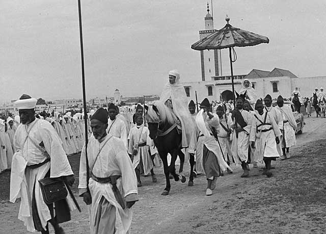

Geschiedenis
 De oorspronkelijke bevolking van Marokko werd gevormd door de Berbers. Het eerste bekende feit van de geschiedenis van Marokko is de vestiging van Fenicische handelsposten aan de Marokkaanse kust ca. 1200 v.Chr.. Daarna stichtten de Carthagers er handelsfactorijen. Nadat Carthago in de Tweede Punische oorlog door het Romeinse Rijk werd verslagen, ging Marokko onderdeel maken van het Berbers koninkrijk Mauretania, een vazalstaat van Rome. Met de executie van de laatste Mauretanische koning Ptolemaeus van Mauretania door keizer Caligula in 40 n. Chr. kwam het gebied onder Romeins bestuur. Na de val van het Romeinse Rijk veroverden de Vandalen (429) het land. Het Byzantijnse Rijk (533) probeerde het gebied onder zijn macht te krijgen, maar het kon alleen de stad Ceuta enige tijd onder controle houden.
In 682 veroverde het Islamitisch Kalifaat het gebied en werd de islam geïntroduceerd. In 739 begon de Grote Berberopstand onder de Marokkaanse Berberstammen. Deze verspreidde zich binnen een zeer korte periode over heel de Maghreb en Spanje. Hoewel de opstand vier jaar later werd neergeslagen, was de centrale macht van het Kalifaat sterk aan het afnemen. Vanaf het begin van de achtste eeuw regeerden verschillende dynastieën over gebieden in de Westelijke Maghreb: het koninkrijk van Nekor (710-1019), de Barghawata (744-1058), de Idrisiden (780-974) en Sijilmasa (771-1051). De Berberse Almoraviden verenigden in de 11e eeuw voor het eerst het huidige Marokko en zij stichten de beroemde hoofdstad Marrakesh. Onder hun bewind zou het land voor het eerst bekend komen te staan als Marokko. Bekende dynastieën waren de Almohaden (1147-1269) en de Meriniden (1215-1465) en de Saadis (1509-1654). Onder die eerste was Marokko enige tijd een wereldmacht. Vanaf de elfde eeuw volgden vernietigende invallen van de Banu Hilal-bedoeïenen. Met hun komst zou het land een versnelde periode van arabisering doormaken. De Arabische migratie was een belangrijke oorzaak voor een lange periode van anarchie in de Maghreb, waarin piraterij vrij spel kreeg.